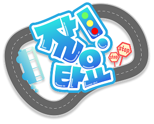

디지털콘텐츠제작07 · 팀 하나둘셋어린이가 실제 버스를 처음 타기 전,
VR 속에서 먼저 경험하고 연습하는
대중교통 자립 교육 플랫폼
버스를 ‘보여주는’ 콘텐츠가 아니라,
어린이가 실제로 해야 하는 행동을
순서대로 익히는 VR 시뮬레이션
“처음 버스를 타는 순간을
처음이 아닌 경험으로 바꾼다.”
잘타요VR은 어린이가 실제 대중교통을 이용하기 전, VR 환경에서 버스 이용 과정을 안전하게 반복 경험할 수 있도록 돕는 교육 플랫폼이다. 정류장 대기, 탑승, 승차 태그, 목적지 확인, 하차벨, 하차까지 이어지는 복합적인 행동을 단계적으로 연습하게 한다.
실제 사고 위험 없이 실패와 재시도 가능
동일 흐름을 여러 번 경험하며 행동 습득
VR에서 익힌 흐름을 현실 버스 이용에 적용
핵심 문제
어린이는 혼자 이동해야 하는 상황이 늘어나지만, 실수해도 괜찮고 반복 가능한 안전한 대중교통 학습 환경은 부족하다.
대중교통 이용은 지식이 아니라
순서·타이밍·판단·행동이 결합된 생활 기술이다.
잘타요VR의 관점은 “아이에게 대중교통 정보를 알려주는 것”이 아니라, 아이가 실제 상황처럼 행동하고 그 결과를 경험하게 만드는 것이다. 따라서 교육 목표도 단순 이해가 아니라, 실제 버스 이용 상황에서 반복 가능한 행동 습관 형성에 있다.
10세 · 맞벌이 가정 자녀
혼자 이동해야 하는 상황은 늘어나지만, 실제 버스를 타는 과정은 낯설고 복잡하다. 잘못 타거나 내릴까 봐 불안하고, 어떻게 해야 하는지 몸으로 익힐 기회가 부족하다.
실제 환경에서는 잘못 내리거나 하차벨을 놓치는 실수가 불안과 위험으로 이어질 수 있다.
버스 노선, 시간, 보호자 일정에 따라 같은 상황을 반복 연습하기 어렵다.
설명을 들어도 실제 상황에서 언제 무엇을 해야 하는지 판단하기 어렵다.
실수해도 괜찮은 환경에서 다시 시도하며 불안감을 줄여야 한다.
정류장, 탑승, 태그, 하차벨 등 실제와 같은 흐름을 경험해야 한다.
처음부터 환승까지 한 번에 배우지 않고 난이도를 천천히 높여야 한다.
잘타요VR은 버스 이용 전 과정을
행동 기반 시뮬레이션으로 구현한다.
정류장 → 탑승 → 태그 → 이동 → 하차벨 → 하차까지 실제 이용 흐름을 반영한다.
사용자가 직접 행동해야 진행된다. 행동 자체가 학습 목표가 된다.
잘못된 행동을 했을 때 안내하고, 올바른 행동으로 수정하도록 유도한다.
게임 조작과 기본 흐름을 익히는 단계. 단순히 버스를 타고 내려보며 VR 이동, 선택, 카드 태그, 하차벨 버튼 같은 기본 인터랙션을 자연스럽게 체험한다.
본격적인 목적 수행 단계. 버스를 타서 목적지 정류장에 내리는 것이 목표이며, 이 단계부터 승차 태그와 하차벨 규칙이 실제처럼 적용된다.
응용 학습 단계. 첫 번째 버스를 타고 환승 정류장에 내린 뒤, 다른 버스로 갈아타 최종 목적지까지 도달하는 방법을 익힌다.
이동, 선택, 버튼 누르기, 물체 가까이 가져가기 등 기본 인터랙션을 먼저 익힌다.
처음부터 미션 실패를 만들지 않고, 아이가 따라 하면서 익숙해지는 구조로 설계한다.
시나리오 1에서 필요한 카드 태그와 하차벨 행동을 미리 경험하게 한다.
튜토리얼에서 익힌 기본 행동을
실제 규칙이 있는 미션으로 확장한다.
목표
버스를 타고, 승차 태그를 한 뒤, 목적지 정류장에 맞춰 하차벨을 누르고 올바르게 하차한다.
탑승만으로는 버스가 움직이지 않는다. 카드를 찍어야 다음 단계가 시작된다.
목적지 전 정류장 구간에서 하차벨을 눌러야 다음 정류장에서 멈춘다.
아무 정류장이 아니라 안내받은 목적지 정류장에서 내려야 미션이 완료된다.
학습 효과: 승차 후 카드 태그 습관, 정류장 확인 능력, 하차벨 타이밍, 목적지 도달 성취감을 형성한다.
시나리오 2는 시나리오 1에서 배운 행동을 새로운 상황에 적용하는 응용 단계다. 아이는 환승 정류장과 최종 목적지를 구분하고, 첫 번째 버스에서 하차한 뒤 두 번째 버스에서 같은 이용 행동을 반복 적용한다.
그래서 잘타요VR은 난이도를
튜토리얼 → 목적지 하차 → 환승으로 천천히 올린다.
따라하기 중심. 조작과 기본 흐름 이해. 실패 부담을 최소화한다.
난이도 낮음목적 수행. 태그해야 출발하고, 하차벨을 눌러 목적지에서 내린다.
난이도 중간응용 수행. 첫 버스에서 내린 뒤 다른 버스로 갈아타 최종 목적지까지 간다.
난이도 높음“버스에 타면 카드를 찍어야 한다”는 규칙을 말이 아니라 결과로 이해한다.
언제 벨을 눌러야 하는지 타이밍을 경험으로 익힌다.
현재 위치와 목적지를 비교하며 이동 판단을 연습한다.
잘타요VR에서는 아이가 행동해야만 상황이 진행된다.
대중교통 이용은 단순 지식이 아니라 행동 순서와 타이밍이 중요한 생활 기술이다. 따라서 “하차벨을 눌러야 한다”는 설명보다, 실제로 목적지 전 정류장에서 벨을 누르고 버스가 멈추는 경험이 더 강한 학습으로 이어진다.
실수 → 안내 → 재시도 → 성공 경험의 반복을 통해 행동이 습관화되고, 현실 상황으로 전이될 수 있다.
게임 시작 버튼을 통해 튜토리얼로 진입. 오늘 배울 내용과 조작을 간단히 안내한다.
이동, 선택, 카드 태그, 버튼 누르기 등 VR 인터랙션을 부담 없이 익힌다.
승차 태그 후 버스 출발, 목적지 전 하차벨, 정류장 도착 후 하차를 수행한다.
첫 번째 버스에서 내려 두 번째 버스를 기다리고, 같은 규칙을 반복 적용한다.
최종 목적지 도착 후 성공 문구, 배운 행동 요약, 다음 시나리오 안내를 제공한다.
튜토리얼은 게임에 익숙해지는 과정, 시나리오 1은 실제 규칙을 적용한 목적 수행, 시나리오 2는 환승이라는 응용 상황이다. 이 흐름은 어린이 사용자를 고려해 복잡한 이동 학습을 작은 성공 경험으로 쪼개는 구조다.
교육 효과를 위해 실제 버스 이용 규칙을
게임 진행 조건으로 연결한다.
핵심: 버스는 단순히 자동으로 움직이는 배경이 아니라, 카드 태그와 하차벨 같은 학습 행동에 반응하는 교육용 시스템이다.
정류장 대기, 승차, 카드 태그, 이동, 하차벨, 하차까지 기본 흐름을 익힌다.
환승 정류장에서 내려 다른 버스를 기다리고, 동일한 이용 규칙을 반복 적용한다.
개찰구 통과, 노선도 확인, 승강장 찾기, 목적지 역 하차 등으로 확장 가능하다.
잘못 탔을 때, 정류장을 지나쳤을 때, 카드 잔액 부족 시 대처 방법을 학습한다.
초기에는 발표 가능 범위인 튜토리얼·시나리오 1·시나리오 2에 집중하고, 이후 시나리오 팩을 추가해 어린이 생활 이동 교육 시리즈로 확장한다.
어린이가 직접 VR 교육 콘텐츠를 구매하기는 어렵다. 따라서 학교·기관·지자체에 공급하고 어린이가 실제 사용자로 학습하는 B2B2C 구조가 적합하다.
교육 콘텐츠 개발·운영
라이선스 구매 및 교육 운영
VR 기반 대중교통 학습
초등학교, 교육청, 지자체, 어린이 교통안전 교육기관, 지역아동센터, VR 체험 교육 업체
교사, 기관 담당자, 학부모, 교육청 관계자. 교육적 명분과 운영 편의성이 도입 판단의 핵심이다.
| 상품 | 대상 | 과금 방식 | 제공 가치 |
|---|---|---|---|
| Basic License | 1개 학급·소규모 기관 | 연간 라이선스 | 기본 시나리오와 교사용 가이드 제공 |
| School License | 학교 단위 | 연간 구독 | 학급별 운영, 교육 활동지, 결과 확인 |
| Public Package | 교육청·지자체·체험관 | 기관 단위 계약 | 공공 교통안전 교육 프로그램화 |
| Scenario Pack | 기존 도입 기관 | 콘텐츠별 추가 과금 | 지하철, 심화 환승, 비상 상황 등 확장 |
실제 사용자는 어린이지만, 구매 결정권은 보호자와 기관에 있다. 따라서 잘타요VR은 개인 앱스토어 판매보다 교육기관이 수업·체험 프로그램으로 운영할 수 있는 라이선스 모델이 현실적이다.
글로벌 VR 교육 콘텐츠 시장 + 어린이 에듀테크 + 생활 안전 교육 시장
국내 초등학교, 교육청, 지자체, 어린이 교통안전 교육기관, VR 체험 교육 시장
초기 파일럿이 가능한 학교, 지역아동센터, 교통안전 체험기관, 지자체 시범 프로그램
튜토리얼, 시나리오 1, 시나리오 2까지 구현해 실제 학습 흐름을 증명한다.
소규모 어린이 사용자와 교육 담당자를 대상으로 사용성, 흥미도, 이해도를 검증한다.
기관이 바로 운영할 수 있도록 콘텐츠와 수업 자료를 묶는다.
교육청·지자체·교통안전 기관에 생활 안전 VR 콘텐츠로 제안한다.
실제 버스를 타기 전, 어디서 기다리고 언제 타고 무엇을 누르고 언제 내려야 하는지 미리 경험한다. 튜토리얼부터 환승까지 단계적으로 배우기 때문에 어려운 내용을 한 번에 학습하지 않아도 된다.
보호자가 모든 대중교통 이용 과정을 직접 반복 교육하지 않아도 된다. 실제 동행 전 사전 연습 도구로 활용하면 더 안전하고 효율적인 생활 교육이 가능하다.
기존 교통안전 교육이 보행 안전 중심이었다면, 잘타요VR은 대중교통 이용이라는 실제 생활 이동 교육까지 확장한다. 학교, 돌봄기관, 체험관에서 활용 가능하다.
어린이가 안전하게 사회적 이동 경험을 시작하도록 돕고, 보호자 의존도를 줄인다. 장기적으로 지하철, 길 찾기, 공공시설 이용, 위급 상황 대처 교육으로 확장할 수 있다.
튜토리얼에서 기본 흐름을 익히고, 시나리오 1에서 목적지 하차를 배우며, 시나리오 2에서 환승까지 경험한다. 아이들은 직접 행동하고, 실수하고, 다시 시도하는 Learning by Doing 방식으로 대중교통 이용 능력을 자연스럽게 습득한다.
B2B2C 기반으로 학교·기관·지자체에 공급하고, 어린이가 실제 사용자로 참여하는 교육 콘텐츠로 확장합니다.
초기 MVP는 튜토리얼·목적지 하차·환승으로 학습 구조를 증명하고, 이후 지하철·길 찾기·비상 상황 대응으로 확장한다.